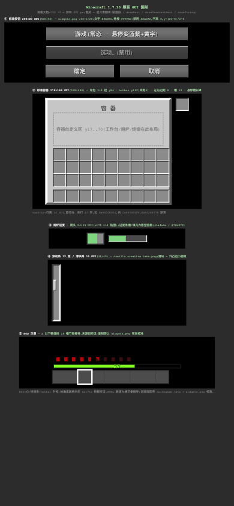

给 AI Agent 的界面设计纪律:先锁定每页要赢的主要矛盾,再收敛方向,用 8 维质疑矩阵与多轮对比打磨到能交付。
选方向时打分、确认前找风险、交付前终检,同一组维度贯穿始终;❌ 必修、⚠️ 豁免须写明理由。
打磨到极致的任务进入评审—修正循环,每轮与上一版并排对比,直到满足停止条件。
Minecraft 1.7.10 原版 GUI:解包官方 client.jar 实证三个版本的贴图规格完全一致,像素网格、组件尺寸、颜色令牌逐项标注来源;HTML 原型按 1 GUI px = 3 CSS px 复刻,配合三份版本映射表可直接翻译成 Java GUI 代码。
